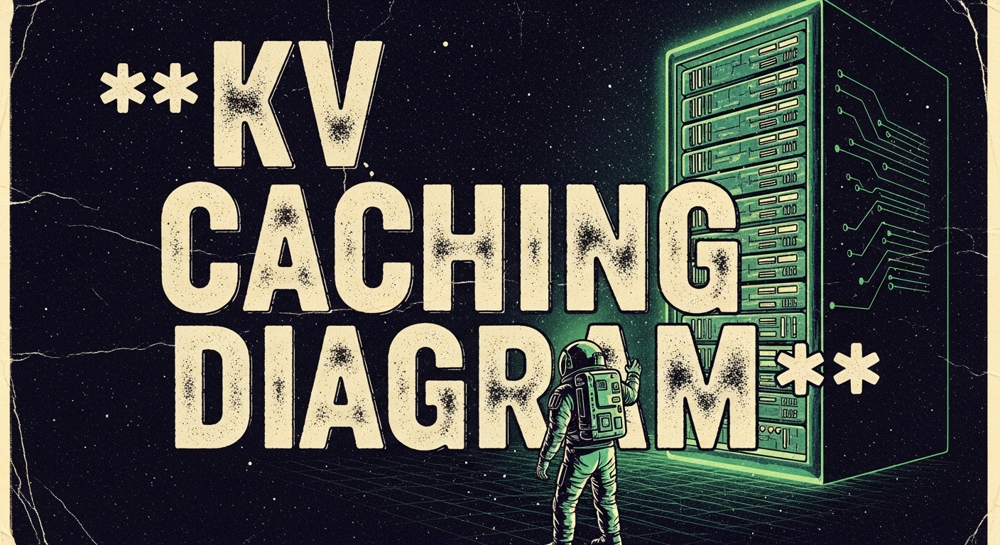

Hierarchical KV Caching: Scaling Context Beyond VRAM Limits
As context windows scale to a million tokens, the KV cache becomes too large for GPU memory. The solution is a multi-tiered cache that offloads data to CPU and NVMe without killing latency.
- KV cache size grows linearly with context length and concurrent users, rapidly exhausting high-speed GPU VRAM and hitting the "VRAM Wall".
- Hierarchical KV caching solves this by treating memory as a multi-tiered system: hot data stays in VRAM, warm data in CPU DRAM, and cold data on NVMe storage.
- Block-based memory management (like PagedAttention) is required to asynchronously move small blocks of KV cache between tiers without blocking execution.
- This architectural shift significantly improves unit economics, allowing clusters to serve massive context windows to far more concurrent users without proportional hardware scaling.
If you look at the evolution of large language models over the last few years, the most obvious metric has been parameters. We went from billions to hundreds of billions. But recently, the game has shifted to a different dimension: context length. We are moving from a few thousand tokens to a million tokens as the standard expectation.
This shift changes everything about how we build serving infrastructure.
When models were small and context was short, the bottleneck was compute. You needed enough FLOPS to perform the matrix multiplications fast enough to satisfy the user. But as context windows grow, the bottleneck shifts from compute to memory. Specifically, it shifts to the Key-Value (KV) cache.
In my work with enterprises trying to deploy retrieval-augmented generation (RAG) systems at scale, I see this problem every day. Teams buy expensive GPUs with 80GB of High Bandwidth Memory (HBM), assuming it will be enough. They load the model weights, which might take up 40GB, and they think they have 40GB left for serving users.
But then they try to run a conversation with a million tokens of history.
Suddenly, a single user request requires tens of gigabytes of memory just to store the history of the conversation. The VRAM is exhausted, not by the model, but by the overhead of keeping track of what was said before.
We need a new approach. We cannot just wait for hardware manufacturers to double the amount of HBM on every chip. We need to manage memory smarter.
The Physics of the KV Cache
To understand the solution, we have to understand why the KV cache exists and why it grows so large.
When an LLM generates text, it operates auto-regressively. It predicts the next token based on all the previous tokens. To do this, it computes a "Key" and a "Value" vector for every token it processes. These vectors are used in the attention mechanism to determine which previous tokens are relevant to the current prediction.
If we did not cache these vectors, we would have to re-compute them for every single token we generate. For a prompt with a thousand tokens, generating the next token would require processing a thousand tokens again. Generating the token after that would require processing a thousand and one tokens. The compute cost would grow quadratically.
So we cache them. Once we compute the Key and Value for a token, we save them in memory. This is the KV cache.
The problem is that the size of this cache grows linearly with the number of tokens in the context and linearly with the number of concurrent users.
Let us look at the numbers. For a typical model like Llama 3 70B, the KV cache requires about 0.5 MB of memory per token per user. That sounds small. But if you have a conversation with a context length of 100,000 tokens, the cache for that single user takes up 50 GB of memory.
If you have ten users asking questions at the same time, you need 500 GB of memory just for the cache.
No single GPU available today can hold that much data in its local high-speed memory. You can stack multiple GPUs together using tensor parallelism, but that is an incredibly expensive way to solve a memory capacity problem. You are paying for compute cores you do not need just to get access to the memory attached to them.
The VRAM Wall
This is the VRAM Wall. It is the point where the economics of serving large context models break down because we cannot fit the working state into the fastest tier of memory.
High Bandwidth Memory (HBM) on a GPU is expensive and physically limited. The chips are manufactured using complex packaging techniques that limit how much memory can be placed close to the compute cores. We are seeing improvements, but the growth in context length is outstripping the growth in HBM capacity by an order of magnitude.
But we have other tiers of memory available in the server.
A standard AI server might have 80 GB of HBM on the GPU. But it also has hundreds of gigabytes of standard CPU memory (DRAM), and terabytes of high-speed NVMe solid-state storage.
The latency to access these tiers varies wildly. HBM is the fastest, measured in terabytes per second. CPU DRAM is an order of magnitude slower. NVMe is slower still.
The standard approach in tools like early versions of Hugging Face transformers was to keep everything in VRAM. If it did not fit, the request failed with an Out of Memory (OOM) error.
Hierarchical KV Caching takes a page from traditional systems engineering. It treats the memory space as a hierarchy, moving data between the tiers based on when it is needed.
The Hierarchical Architecture
The core idea is simple: You do not need the entire KV cache for a million-token conversation in VRAM at the exact same millisecond.
When a user sends a new prompt in a long conversation, the model needs to attend to the previous tokens. But it does not attend to all of them with the same urgency. And in a multi-turn conversation, large parts of the history remain static for long periods.
In a hierarchical system, we organize the cache into three tiers:
- The Hot Tier (VRAM): This holds the KV cache for the active requests currently being processed by the GPU.
- The Warm Tier (CPU DRAM): This holds the cache for conversations that are paused (e.g., waiting for the user to type the next response) or parts of the history that are not immediately needed.
- The Cold Tier (NVMe): This holds the cache for inactive conversations or very old history that might be needed if the user scrolls back up or asks a question about the beginning of the document.

The magic is in the management. We need to move data between these tiers without stopping the execution of the model.
To do this effectively, we cannot treat the cache as a single giant tensor. If you try to move a 50 GB tensor from CPU to GPU, you will block the PCIe bus and destroy the latency of every other user on the system.
We need to break the cache into blocks.
Block-Based Management
This is where the concepts popularized by projects like vLLM and its PagedAttention mechanism become critical.
Instead of allocating a contiguous block of memory for the entire maximum context length, we break the KV cache into small, fixed-size blocks. A block might hold the keys and values for 16 tokens.
These blocks do not need to be contiguous in physical memory. They can be scattered anywhere in VRAM. We maintain a page table, just like an operating system does for virtual memory, to map the logical sequence of tokens to the physical blocks.
This block-based structure is what makes hierarchical caching possible.
When VRAM gets full, the system can identify blocks that belong to inactive requests or represent old history. It can copy these specific blocks from VRAM to CPU memory asynchronously, freeing up space for new tokens.
Because we are moving small blocks rather than giant tensors, the transfer can happen in the background while the GPU is busy doing compute on other requests.
When the model needs to access a block that has been offloaded to CPU, the system pauses the execution of that specific request, fetches the block back to VRAM, and resumes. This introduces a small latency penalty for that request, but it allows the system to handle a workload that would otherwise be impossible.
Implementing the Offload Loop
Let us look at how this logic is structured. We are not writing low-level CUDA here; we are looking at the control logic that runs in the scheduler of the serving engine.
In a system implementing hierarchical caching, the scheduler loop looks something like this:
class HierarchicalScheduler:
def __init__(self, vram_limit, cpu_limit):
self.vram_manager = BlockManager(vram_limit)
self.cpu_manager = BlockManager(cpu_limit)
self.active_requests = []
def step(self):
# 1. Check if we need to free up VRAM
if self.vram_manager.usage_percent() > 90:
self._offload_inactive_blocks()
# 2. Check if active requests need blocks fetched from CPU
for request in self.active_requests:
if request.needs_blocks_from_cpu():
self._prefetch_blocks(request)
# 3. Schedule execution for requests that have all blocks in VRAM
ready_requests = [r for r in self.active_requests if r.is_ready()]
self._execute_batch(ready_requests)
def _offload_inactive_blocks(self):
# Find blocks belonging to requests that are waiting or least recently used
blocks_to_evict = self.vram_manager.get_lru_blocks()
for block in blocks_to_evict:
cpu_block = self.cpu_manager.allocate()
# Asynchronous copy from GPU to CPU
copy_gpu_to_cpu_async(block, cpu_block)
self.vram_manager.free(block)
# Update page table
update_mapping(block.id, location="CPU", address=cpu_block)This is a simplified view, but it illustrates the pattern. The system is constantly balancing the memory pressure, moving blocks between the fast and slow tiers to maintain the illusion that the entire context is always available.
The FinOps Impact
The shift to hierarchical caching is not just a technical optimization. It is a fundamental shift in the economics of AI.
If you rely solely on VRAM, the cost of serving long-context models grows linearly with the number of users and the length of the history. You quickly reach a point where the cost of the hardware outweighs the value of the application.
By offloading the inactive state to CPU memory and NVMe, we can increase the effective capacity of a single node by an order of magnitude. You can serve ten times as many users on the exact same GPU cluster.
The trade-off is latency. A request that requires fetching blocks from CPU will take longer than one where everything is in VRAM.
But in production, this is a trade-off that users are willing to make. A user understands that asking a question about a document they uploaded an hour ago might take a few seconds longer than asking a follow-up to a question they asked ten seconds ago.
Conclusion
We used to think that the solution to the memory problem was just better quantization or larger clusters.
But the real solution is architecture.
Hierarchical KV Caching proves that by applying classic systems engineering principles to the AI stack, we can break through physical hardware limits. We do not need to wait for the perfect chip with a terabyte of HBM. We can build systems today that handle massive contexts by treating memory as a scarce resource and managing it intelligently.
If you are building serving infrastructure for long-context applications, do not just look at the compute metrics. Look at your memory hierarchy. It is the difference between an application that is a research curiosity and one that is economically viable in production.